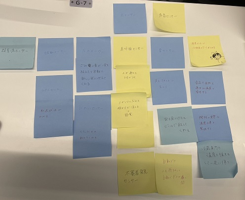

第3回 IoTに関して：データを集めることで、何ができるか？
ポストイット
センサーをあげ、それらがなにをできるか考えた 
自分で考えたアイディア
年齢確認をしてくれるセンサー
人感センサーと顔認証センサーを組み合わせて使う
人感センサーで人が来たときにカメラを起動させて、顔認証センサーで
その人が20歳以上かどうかを判断する（検温のような感じで）
居酒屋やスーパーなどで使う
たまに年齢確認をすると怒ってくる人がいるから年齢がわかるセンターがあれば
店員側の負担が減ると考えた